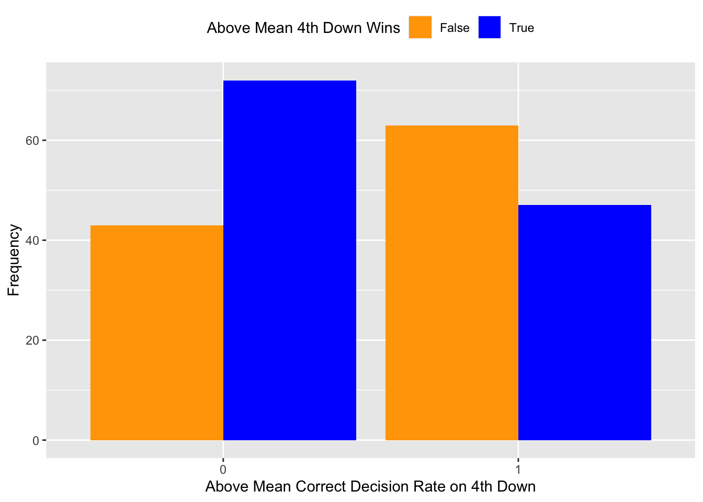
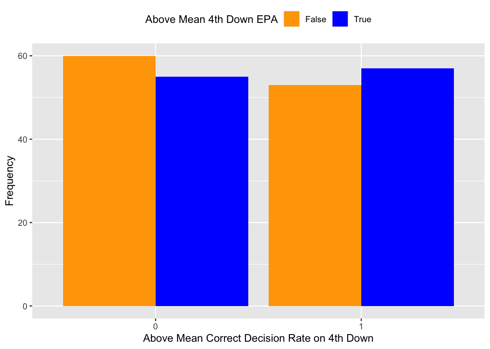
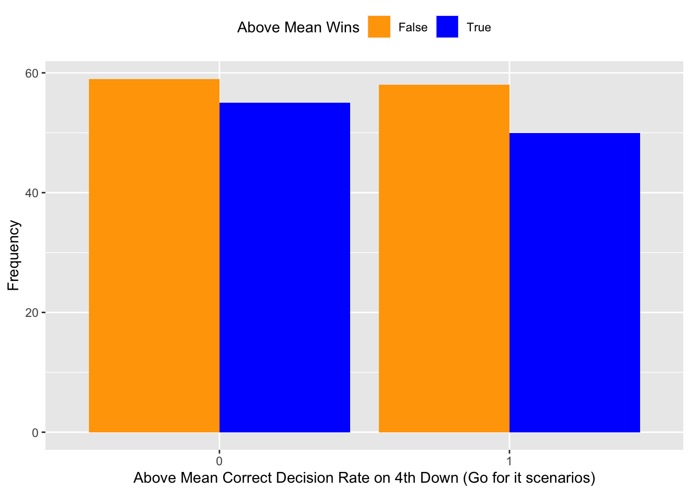
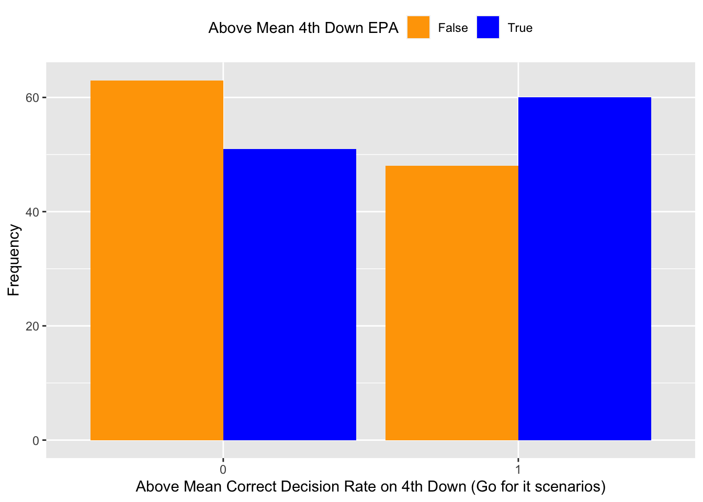

| coach | team | season | correct_rate | pct | epa |
|---|---|---|---|---|---|
| Adam Gase | MIA | 2016 | 0.075 | 0.625 | -0.278 |
| Adam Gase | MIA | 2017 | 0.375 | 0.375 | -0.133 |
| Adam Gase | MIA | 2018 | 0.211 | 0.438 | -0.021 |
| Adam Gase | NYJ | 2019 | 0.340 | 0.438 | -0.171 |
| Adam Gase | NYJ | 2020 | 0.237 | 0.125 | -0.382 |
| Andy Reid | KC | 2016 | 0.269 | 0.750 | 0.230 |
| Andy Reid | KC | 2017 | 0.170 | 0.625 | 0.096 |
| Andy Reid | KC | 2018 | 0.422 | 0.750 | 0.353 |
| Andy Reid | KC | 2019 | 0.286 | 0.750 | 0.021 |
| Andy Reid | KC | 2020 | 0.360 | 0.875 | 0.097 |
Effect on Coach Success
As we saw in the last step of our EDA, coaches are consistently far too conservative when it comes to fourth down decisions. We are trying to figure out why this may be the case. Two possible reasons immediately come to mind:
- 4th down decisions have less effect on the outcome of games than we think.
- Coaches who are more conservative will keep their jobs longer, as being aggressive (and failing) on fourth down could be generally frowned upon by the NFL community.
All 4th Downs
Lets explore the first reason. One simple measure of coach success season by season is winning percentage. To take a quick look this, we can look at how correct decision rate on 4th down compares to the winning percentage a coach had in that particular season. Alongside this process we will also look at the average EPA per play on 4th downs coaches had in go-for-it situations that season. EPA is a measure of success that stands for “Estimated Points Added” and it measures the estimated points a play will add to the total final score at the end of the game.
Now we have the winning percentage and epa alongside the correct decision rate on fourth down for every coach by season. Let’s take a closer look at this table and add averages for winning percentage, correct decision rate, and epa.
| coach | team | season | correct_rate | pct | epa | z_wins | z_correct | z_epa | above_mean_wins | above_mean_correct | above_mean_epa |
|---|---|---|---|---|---|---|---|---|---|---|---|
| Adam Gase | MIA | 2016 | 0.075 | 0.625 | -0.278 | 0.657 | -2.428 | -1.450 | 1 | 0 | 0 |
| Adam Gase | MIA | 2017 | 0.375 | 0.375 | -0.133 | -0.653 | 0.567 | -0.613 | 0 | 1 | 0 |
| Adam Gase | MIA | 2018 | 0.211 | 0.438 | -0.021 | -0.326 | -1.075 | 0.032 | 0 | 0 | 1 |
| Adam Gase | NYJ | 2019 | 0.340 | 0.438 | -0.171 | -0.326 | 0.218 | -0.837 | 0 | 1 | 0 |
| Adam Gase | NYJ | 2020 | 0.237 | 0.125 | -0.382 | -1.963 | -0.808 | -2.054 | 0 | 0 | 0 |
| Andy Reid | KC | 2016 | 0.269 | 0.750 | 0.230 | 1.312 | -0.489 | 1.482 | 1 | 0 | 1 |
| Andy Reid | KC | 2017 | 0.170 | 0.625 | 0.096 | 0.657 | -1.481 | 0.705 | 1 | 0 | 1 |
| Andy Reid | KC | 2018 | 0.422 | 0.750 | 0.353 | 1.312 | 1.039 | 2.189 | 1 | 1 | 1 |
| Andy Reid | KC | 2019 | 0.286 | 0.750 | 0.021 | 1.312 | -0.324 | 0.274 | 1 | 0 | 1 |
| Andy Reid | KC | 2020 | 0.360 | 0.875 | 0.097 | 1.967 | 0.417 | 0.710 | 1 | 1 | 1 |
Now we can cross tabulate effectively.


It looks as if decision rate on 4th down has little effect on the win rate of coaches, which makes sense as when looking at plays across an entire game, 4th down plays make up a small percentage of those plays. It would be worth looking at how influential 4th down plays are on the result of each game compared to other types of plays, though.
Having a good correct 4th down decision does seem to have more of an effect on EPA, however. This makes sense as EPA in this case is estimated points added on 4th down, meaning this metric is directly measuring success on 4th down only, rather than success across an entire game. It is not surprising that having a good correct 4th down decision rate would lead to a more positive 4th down success metric than a whole game success metric.
It is an encouraging sign to see that making “correct” decisions on 4th down leads to more points on those 4th down plays. This means it would be useful to explore how 4th down plays contribute to a team’s final score compared to plays on other downs. This may give us a better idea as to how these 4th down decisions affect the success of coaches across the entire game, rather than simply on 4th down.
High-Leverage Scenarios
Let’s go back to our discussion involving high-leverage scenarios. What would happen if we did the same cross tabulation as above but only including high-leverage scenarios? In theory, this would give tell us more about a coaches success because these situations are single plays in which games are won and lost.
Here are the first few rows of the dataset showing high-leverage situations we were looking at earlier. This time though it is a larger dataset because I chose to remove the condition that wp_succeed > 0.95 as that limited us too much. Now the definition for a “high-leverage scenario” is one in which the difference in win probability between failing and succeeding in a 4th down attempt is 10%. This way we have 3,676 4th down situations to look at instead of only 113.
| season | coach | posteam | defteam | qtr | time | ydstogo | yardline_100 | posteam_score | defteam_score | go_boost | go | epa | wp | wp_fail | wp_succeed | wp_change | fg_make_prob | miss_fg_wp | make_fg_wp | punt_wp |
|---|---|---|---|---|---|---|---|---|---|---|---|---|---|---|---|---|---|---|---|---|
| 2016 | Rex Ryan | BUF | BAL | 4 | 14:19 | 1 | 49 | 7 | 10 | 9.71 | 0 | -1.879 | 0.335 | 0.221 | 0.437 | 0.216 | 0.000 | 0.206 | 0.408 | 0.269 |
| 2016 | John Harbaugh | BAL | BUF | 4 | 12:59 | 18 | 78 | 10 | 7 | -10.09 | 0 | 0.465 | 0.630 | 0.515 | 0.781 | 0.265 | 0.000 | 0.481 | 0.793 | 0.643 |
| 2016 | Rex Ryan | BUF | BAL | 4 | 11:46 | 4 | 59 | 7 | 10 | 2.80 | 0 | -0.668 | 0.267 | 0.201 | 0.406 | 0.205 | 0.000 | 0.187 | 0.418 | 0.269 |
| 2016 | John Harbaugh | BAL | BUF | 4 | 07:43 | 14 | 27 | 10 | 7 | -6.31 | 0 | 2.973 | 0.804 | 0.681 | 0.899 | 0.218 | 0.765 | 0.656 | 0.820 | NA |
| 2016 | John Harbaugh | BAL | BUF | 4 | 05:42 | 16 | 19 | 10 | 7 | -7.08 | 0 | 0.469 | 0.846 | 0.733 | 0.936 | 0.203 | 0.892 | 0.706 | 0.837 | NA |
| 2016 | Rex Ryan | BUF | BAL | 4 | 04:43 | 18 | 86 | 7 | 13 | -2.08 | 0 | 0.012 | 0.101 | 0.047 | 0.204 | 0.156 | 0.000 | 0.041 | 0.196 | 0.083 |
Applying the same transformations to this smaller set as we did to the set of every 4th down play gives us performance by coach in these scenarios.
| coach | team | season | should_go | shouldnt_go | pct | epa | count |
|---|---|---|---|---|---|---|---|
| Adam Gase | MIA | 2016 | 0.000 | 1 | 0.625 | -0.278 | 16 |
| Adam Gase | MIA | 2017 | 0.500 | 1 | 0.375 | -0.133 | 14 |
| Adam Gase | MIA | 2018 | 0.000 | 1 | 0.438 | -0.021 | 13 |
| Adam Gase | NYJ | 2019 | 0.286 | 1 | 0.438 | -0.171 | 17 |
| Adam Gase | NYJ | 2020 | 0.400 | 1 | 0.125 | -0.382 | 15 |
| Andy Reid | KC | 2016 | 0.250 | 1 | 0.750 | 0.230 | 19 |
Now we can cross tabulate as before.
| coach | team | season | should_go | shouldnt_go | pct | epa | count | z_wins | z_should | z_shouldnt | z_epa | above_mean_wins | above_mean_should | above_mean_shouldnt | above_mean_epa |
|---|---|---|---|---|---|---|---|---|---|---|---|---|---|---|---|
| Adam Gase | MIA | 2016 | 0.000 | 1.000 | 0.625 | -0.278 | 16 | 0.652 | -1.801 | 0.493 | -1.445 | 1 | 0 | 1 | 0 |
| Adam Gase | MIA | 2017 | 0.500 | 1.000 | 0.375 | -0.133 | 14 | -0.655 | 0.438 | 0.493 | -0.612 | 0 | 1 | 1 | 0 |
| Adam Gase | MIA | 2018 | 0.000 | 1.000 | 0.438 | -0.021 | 13 | -0.328 | -1.801 | 0.493 | 0.031 | 0 | 0 | 1 | 1 |
| Adam Gase | NYJ | 2019 | 0.286 | 1.000 | 0.438 | -0.171 | 17 | -0.328 | -0.522 | 0.493 | -0.834 | 0 | 0 | 1 | 0 |
| Adam Gase | NYJ | 2020 | 0.400 | 1.000 | 0.125 | -0.382 | 15 | -1.961 | -0.010 | 0.493 | -2.047 | 0 | 0 | 1 | 0 |
| Andy Reid | KC | 2016 | 0.250 | 1.000 | 0.750 | 0.230 | 19 | 1.305 | -0.682 | 0.493 | 1.474 | 1 | 0 | 1 | 1 |
| Andy Reid | KC | 2017 | 0.333 | 0.857 | 0.625 | 0.096 | 22 | 0.652 | -0.308 | -1.540 | 0.700 | 1 | 0 | 0 | 1 |
| Andy Reid | KC | 2018 | 0.750 | 1.000 | 0.750 | 0.353 | 16 | 1.305 | 1.558 | 0.493 | 2.178 | 1 | 1 | 1 | 1 |
| Andy Reid | KC | 2019 | 0.400 | 0.909 | 0.750 | 0.021 | 16 | 1.305 | -0.010 | -0.801 | 0.271 | 1 | 0 | 0 | 1 |
| Andy Reid | KC | 2020 | 0.500 | 1.000 | 0.875 | 0.097 | 11 | 1.958 | 0.438 | 0.493 | 0.706 | 1 | 1 | 1 | 1 |


We see similar results here, where 4th down correct decision rate does not have much of an effect on a team’s record throughout the entire season, but there seems to be even more of an effect on 4th down EPA. This is useful information going into feature selection. We will attempt to predict 4th down EPA during a season, using a variety of features.